Priceline Post-Booking
Unifying the order confirmation experience for single-product and multi-product bookings.
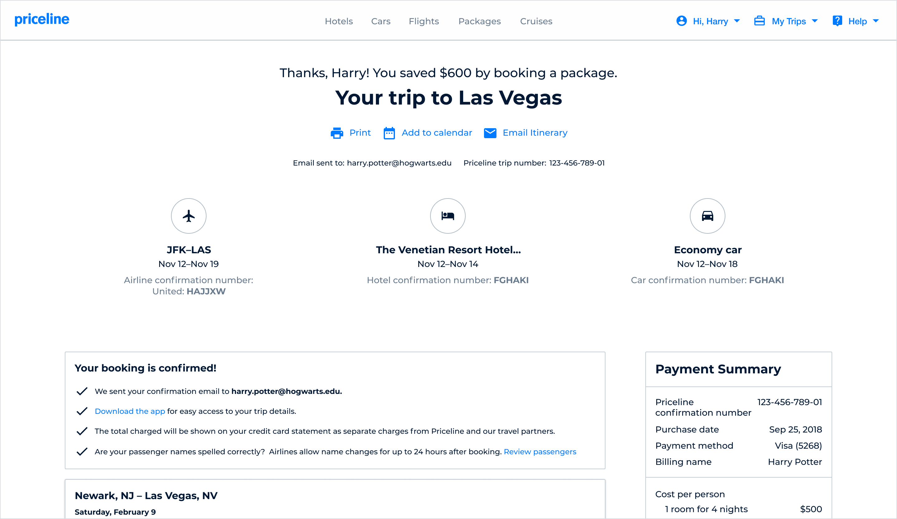
Strategic challenge
Over time, Priceline’s post-booking order confirmation experience had fractured into separate, product-specific templates managed independently by individual vertical teams (Air, Hotel, Car). While this legacy setup sufficed when customers primarily bought individual items, it created an increasingly disconnected and disjointed user experience as the business looked toward multi-product growth.
The goal was to design and architect a single, cross-functional itinerary application that could dynamically scale to support both single-product purchases and complex multi-product bundles. By moving to a flexible system of unified React components to deprecate the old Angular pages, the new experience aimed to give bundling customers a comprehensive, beautifully organized summary of their entire trip. This design strategy focused on embedding context-aware self-service tools directly within the itinerary, building consumer confidence and protecting the retention gains driven by the bundling initiative.
Supporting data
Top clicked FAQ pages
- 1. Airline contact list
- 2. Change or cancel hotel rooms
- 3. Change or cancel airline tickets
- 4. Multi airline tickets
- 5. International phone numbers
% of customers who return to the confirmation page
- Packages 83%
- Air 78%
- Rental Car 61%
- Hotel 51%
Top Confirmation Page Events
- 1. Print itinerary
- 2. Email itinerary
- 3. Add to calendar
- 4. Can I cancel this reservation?
- 5. Rental car cross-sell
How were customers using the confirmation page?
To understand traveler behavior, the PM and I extracted baseline metrics from Google Analytics. We hit an immediate constraint: due to fragmented legacy ownership, the old confirmation pages lacked standardized tracking, leaving several flows untagged.
Instead of waiting, we audited the available data to piece together the traveler journey, uncovering two critical behavioral patterns:
Bundling customers treat the confirmation page as a living itinerary—frequently returning post-booking to coordinate multiple moving travel pieces—shifting our target from a static receipt to a dynamic travel hub.
Customer journey
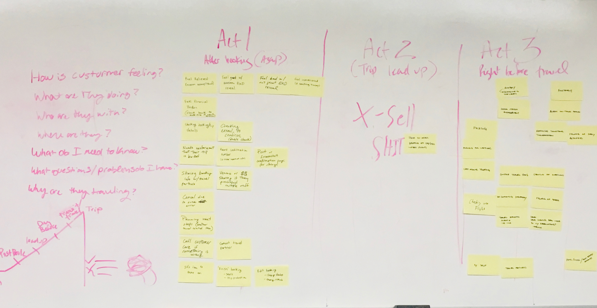
Five chapters of the trip
Priceline’s user researcher and I partnered to lead a workshop defining the customer’s post-booking journey. The group created a 5-chapter story and then, for each chapter, explored what the customer’s mindset might be.
This exercise also clarified scope. The first 3 chapters were defined as in scope; the last 2 moved out of scope.
Focus the MVP on post-booking, planning, and pre-travel — and defer in-travel and post-travel experiences.
1. Post-Booking
Did the customer’s order go through and is it correct?
2. Plan
Have plans changed or can we help with further plans?
3. Pre-travel
What information does the customer need?
4. Travel
Does the customer know their daily itinerary?
5. Post-travel
How was their trip and can we book their next trip?
Trip overview
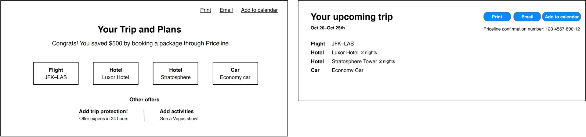
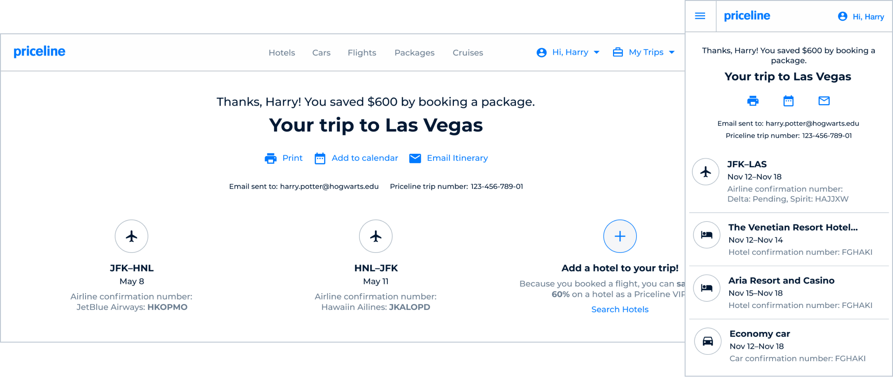
Start with the summary
Facing a compressed design timeline before development kickoff, I led the structural strategy for the new header ecosystem, partnering with a junior designer to execute the top of the post-booking experience. Our goal was to transform a static confirmation page into an intuitive, multi-product trip hub by focusing on three architectural pillars:
Holistic Travel Summaries
Designing a cohesive framework that surface overall trip details, highlight user savings, and adapt effortlessly to complex product bundles.
Global Action Center
Standardizing high-frequency utilitarian events (like printing and emailing) in a high-level, global zone to maximize efficiency.
Immediate Verification
Elevating confirmation numbers for each product front-and-center to give multi-destination travelers instant peace of mind.
Dynamic content
Right information at the right time
Knowing that bundling customers continuously used this screen to track their entire trip, the junior designer and I designed a dynamic content hierarchy below the header. The layout automatically adapts to the user's specific purchase, surfacing tailored modules to guide them smoothly through their travel.
0-2 days After Booking
The purpose of this content is all around reassurance. Is the customer confident in their booking? Are their trip details correct?
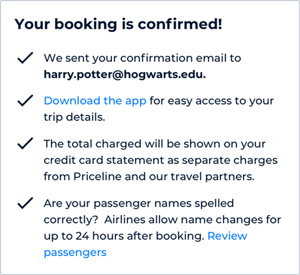
In Between
The purpose of this content is completing your trip. What other add-ons or ancillaries may the customer be interested in based off what they have currently booked?
0-2 Days Before Travel
The purpose of this content is being prepared to travel. What does the customer need to know to have a successful trip?
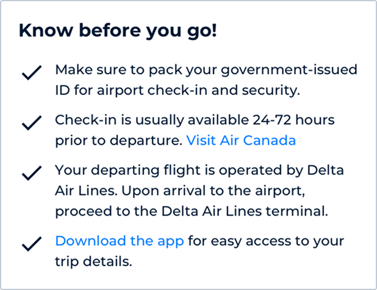
Product component
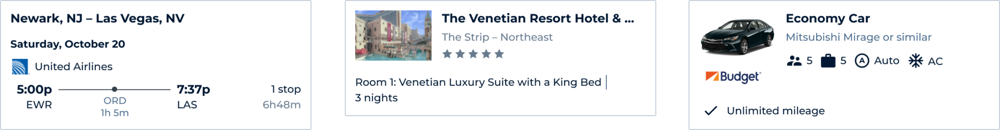
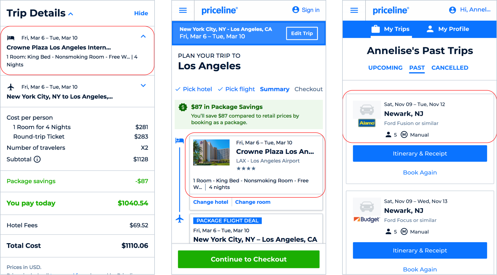
Familiar product details
It was important to show customers a summary of each product they had just booked. By post-booking, they had already seen product details presented in numerous ways. One goal of this component was for it to be reused throughout the experience so product information stayed familiar and consistent.
Product card
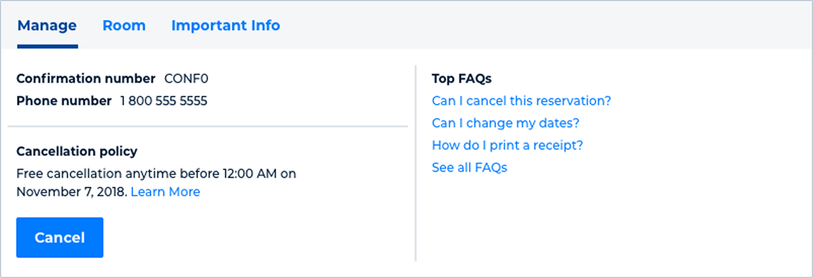
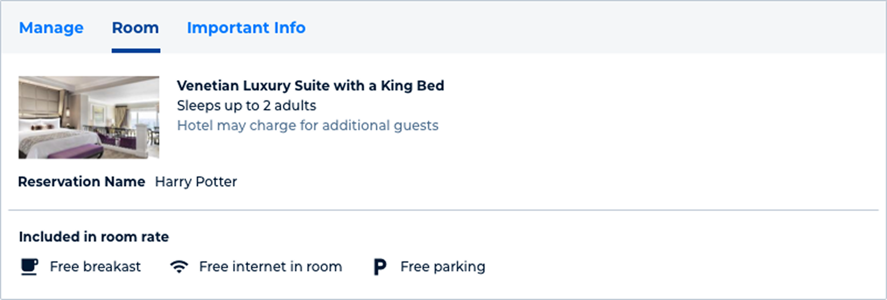
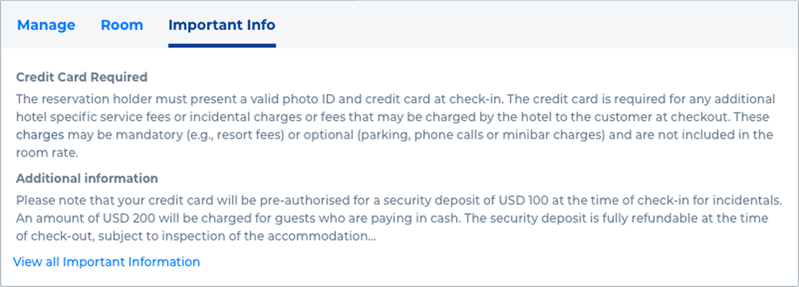
Self-service tools, on demand
Below the product summary and details for each product booked there is a tabbed section with self service tools and additional information about each product booked. The tabs allow for more information to be accessed if need be, and saves on space when the customer has a package booking.
Cancellation flow
Self-service when it matters
Self-service cancellation, where available, is an important part of the customer experience. Product and design partnered closely with finance and customer care to learn more about chargebacks, why customers cancel, and how refunds work.
Full design
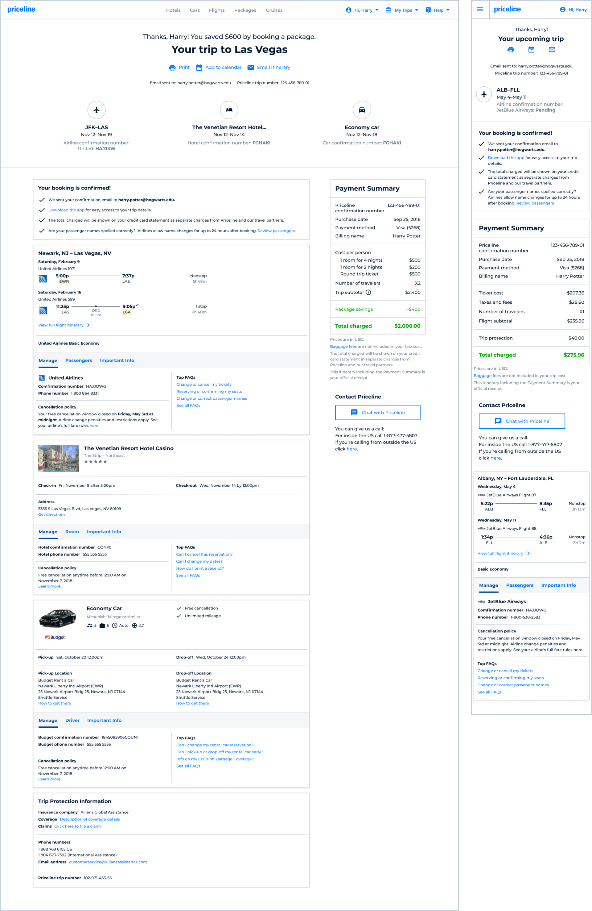
One itinerary, many products
The final design incorporated all of the above components with an emphasis on information in the right context. It was dynamic, accounting for a customer booking 1 product or multiple products. The summary at the top acted as hyperlinks to relevant product info lower down. FAQs and cancellation moved into product summary cards rather than living on their own as they had in the old experience.
Outcomes
- A single React application that replaced the need to support and update 4 different confirmation pages
- Specific FAQ pages highlighted on the confirmation page saw an increase of up to 76% in pageviews
- Customer care contact rates for certain reason codes dropped up to 65%
Reflection
- During research and ideation I was still lead designer for the flights team, so a challenge was juggling design for multiple teams at once. A positive was that being on multiple teams meant having background in key product requirements and regulations.
- I would have liked more upfront research time and more space to think through the architecture of a full post-booking experience, rather than focusing mainly on the confirmation page.
- One of the goals was to build a strong, flexible base knowing we might need to pivot or grow the experience later — which the team successfully accomplished.